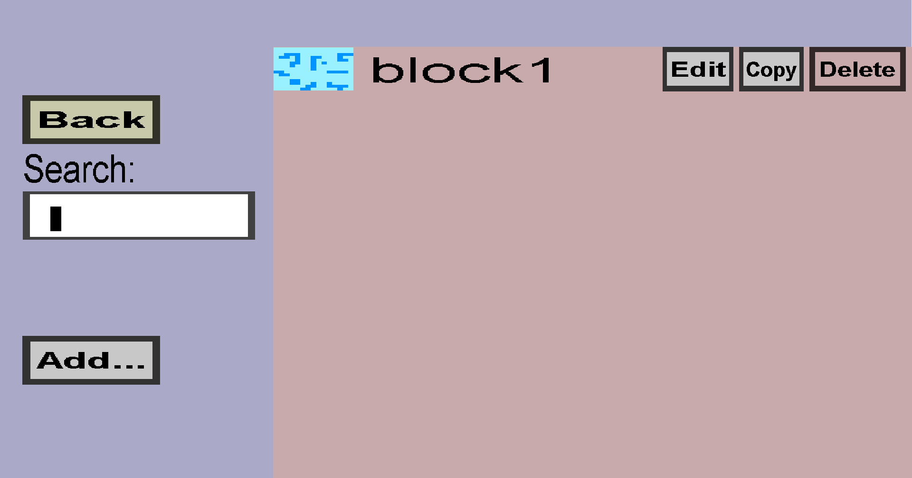

The tree generator overview can be used to view and manage your tree generators. Tree generators will try to place trees in each chunk of your world. You can choose the shape and the blocks used to create such trees. If you have a single tree generator, this menu should look like this:
